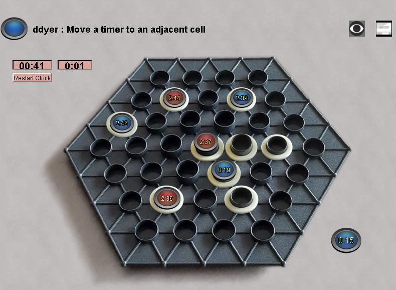

Tamsk
Tamsk was originally the second game of the Gipf series, but
it was always rare and expensive. The manufactured game uses sand
timers to provide the time imperitive, which tended to be unreliable,
and made the game expensive to produce. Eventually it was
"replaced" in the series and more or less orphaned.
This
implementation dispenses with the sand timers, but uses digital timers
with the same behavior as sand timers would have (if they were
reliable). The main board timers are 3 minutes, and the push
timer is 15 seconds.
The object of the game is to place
as many rings as possible, each hex has a capacity of 1, 2, 3, or 4
rings. You can't move a timer if it ever expires, and you can't
add more rings to a full cell. You can read the complete rules here.
Robots: The robot isn't
perfect dealing with the timers, but you have to be pretty good at it
too. And the robot doesn't feel the pressure!
|

|